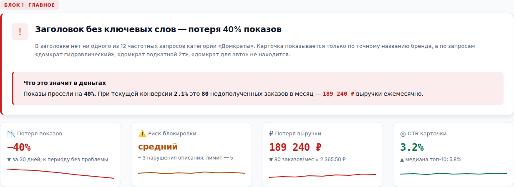
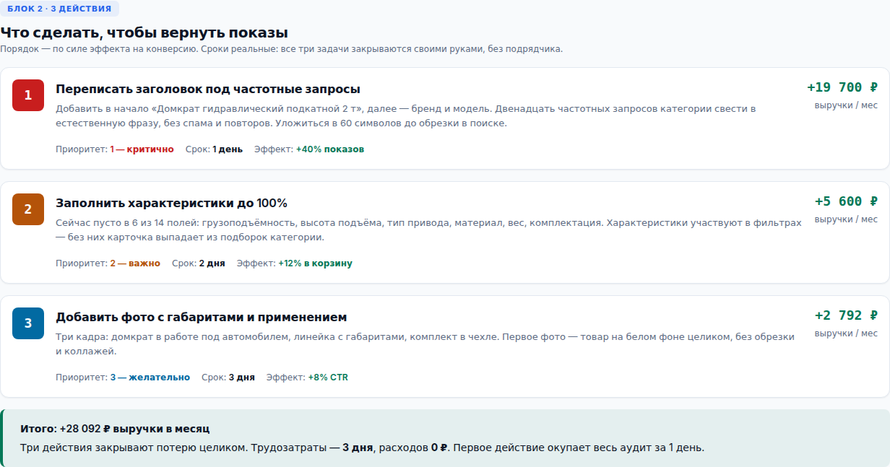
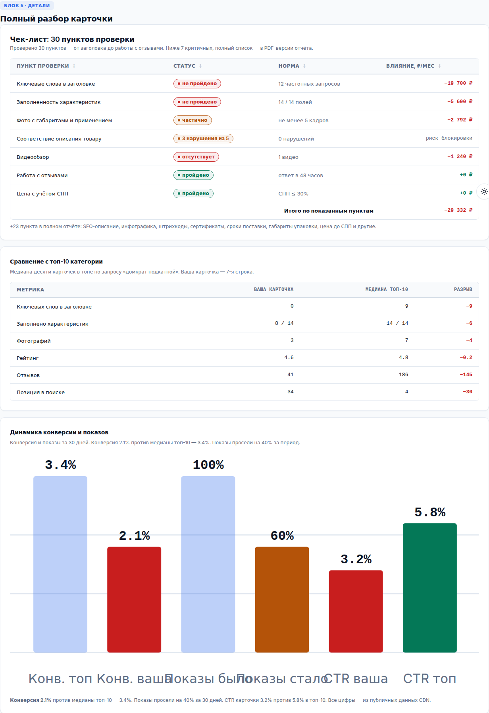

Аудит карточки Wildberries
Аудит карточки WB за 1 день — 1 500 ₽
Пришлите ссылку на карточку — завтра получите отчёт с диагнозом, ценой проблемы в рублях и тремя действиями по приоритету. Доступ к личному кабинету не нужен: работаем на публичных данных.
Оплата после того, как отчёт готов. Предоплата не нужна.
Что получите
пять блоков отчёта, каждый отвечает на свой вопрос-
Главное — проблема и её цена
Одна главная проблема, из-за которой карточка теряет показы или заказы, и её стоимость в рублях. Не список из тридцати замечаний, а то, что решает исход: «заголовок без ключевых слов — потеря 40% показов». Рядом четыре KPI: потеря показов, риск блокировки, потеря выручки, маржа с единицы.
Пример: «Показы просели на 40% — это 80 недополученных заказов в месяц, 189 240 ₽ выручки и 28 092 ₽ маржи»
-
3 действия — что делать
Три задачи по приоритету, а не по порядку в голове. У каждой: что именно сделать, ожидаемый эффект в процентах и рублях, реальный срок и приоритет. Формулировки готовы к работе — заголовок написан, характеристики перечислены, состав фото описан.
Пример: «1. Переписать заголовок под 12 частотных запросов — +40% показов, срок 1 день, +19 700 ₽ маржи в месяц»
-
Почему мы — откуда цифры
Источник данных и проверки качества, чтобы вы могли оценить, насколько цифрам можно верить. Не «мы посчитали», а схема: откуда взяты данные, сколько строк разобрано, какая формула применена и по какому документу площадки.
Пример: «Публичный CDN Wildberries, 298 из 298 строк сверено, 30 пунктов проверки, сравнение с топ-10 категории»
-
Страх потери — что будет, если не чинить
Сколько денег уходит прямо сейчас и как накапливается потеря на горизонтах 3, 6 и 12 месяцев. Плюс отдельный риск: сколько нарушений описания накопилось и при каком количестве площадка скрывает карточку из поиска.
Пример: «Через год — 2 270 880 ₽ выручки и 337 104 ₽ маржи. Сейчас 3 нарушения из 5 допустимых»
-
Детали — полный разбор
Всё, что подтверждает выводы: чек-лист из 30 пунктов проверки со статусом и суммой влияния по каждому, сравнение с медианой топ-10 по 6 метрикам.
Пример: «Ключевых слов в заголовке: 0 против 9 в топ-10. Позиция в поиске: 34 против 4»
Как работает
три шага, без встреч и созвонов-
Заявка
Присылаете ссылку на карточку Wildberries в Telegram или по телефону. Достаточно ссылки — артикул, категорию и характеристики я найду сам. Ключи и доступы не нужны.
-
Аудит
Разбираю карточку: заголовок и ключевые запросы, характеристики, фото и видео, описание, отзывы, цену и СПП. Сравниваю с медианой топ-10 категории.
-
Отчёт
Получаете отчёт из 5 блоков в PDF и в интерактивном HTML: смотрите, задаёте вопросы, платите после. Если аудит не получился по моей причине — оплата не берётся.
Пример отчёта
три фрагмента из демо-отчётаНиже — фрагменты демонстрационного отчёта по карточке категории «Домкраты» (nmId 12345678, кВВ 28,5%). Цифры в примере — расчёт по демо-данным, а не по вашей карточке.



Частые вопросы
семь вопросов, которые задают до заказаНужен ли доступ к моему личному кабинету Wildberries?
Нет. Аудит строится на публичном CDN Wildberries — той же витрине, которую видит покупатель: карточка, характеристики, фото, отзывы, позиции в поиске. API-ключ и доступ в личный кабинет не нужны, ничего передавать не требуется.
Что именно я получу за 1 500 ₽?
Отчёт из 5 блоков: ГЛАВНОЕ (проблема и её цена в рублях), 3 ДЕЙСТВИЯ (что сделать, ожидаемый эффект, срок), ПОЧЕМУ МЫ (источник данных и проверки качества), СТРАХ ПОТЕРИ (сколько теряете в месяц и за год при бездействии), ДЕТАЛИ (30 пунктов проверки, сравнение с топ-10 категории). Отчёт приходит в PDF и в интерактивном HTML.
Сколько времени занимает аудит?
Один рабочий день с момента, когда вы присылаете ссылку на карточку. Отчёт строится на публичных данных, поэтому ждать выгрузок из личного кабинета не нужно.
Какие карточки подходят для аудита?
Любая карточка Wildberries, которая уже в продаже. Аудит работает и для товара без продаж: тогда отчёт покажет, что мешает ему продаваться — заголовок, характеристики, фото или цена. Для одного заказа — одна карточка; несколько разбираются отдельными заказами.
Откуда берутся цифры потерь в рублях?
Из расчёта потерь на основе данных публичного CDN: сколько показов теряется без ключевых слов, какая конверсия при текущих характеристиках, сравнение с топ-10 категории. Все цифры проверяемы: 30 пунктов, 298 из 298 строк сверено.
Вы внедряете рекомендации?
Нет, аудит заканчивается отчётом. Вы получаете диагноз, приоритеты и конкретные формулировки — заголовок, список недостающих характеристик, состав фото. Правки в карточку вы вносите сами или через своего контент-менеджера. Это осознанное ограничение: так цена остаётся 1 500 ₽, а не превращается в проект.
Как оплатить и что если отчёт не подойдёт?
Оплата после того, как отчёт готов: сначала вы его смотрите, потом платите. Предоплата не нужна. Если аудит не получился по моей причине — данных не хватило или карточка не разобралась, — оплата не берётся.
Пришлите ссылку на карточку
Отвечаю письменно, звонков нет. Достаточно ссылки на карточку Wildberries — остальное найду сам. Отчёт будет завтра.